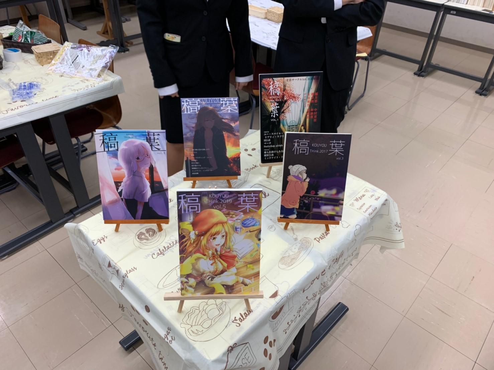

展示企画参加団体紹介
写真部
〜新宿祭写真展2021〜
オンライン授業、部活動停止、緊急事態宣言、
様々な制約を強いられている大学生。
写真部ではこのような状況でも、
オンラインで交流を活発に行ってきました。
部員一人ひとりの個性を写真を通じて楽しんでください。
ink.
〜DRink.〜
インクではサークル誌の他サークルメンバーが
お気に入りの本を紹介するレビューやメンバーが持ち寄った本を提示致します。
ぜひお越しください
普段の活動内容
小説をはじめとする創作物を、様々な方式で活動時間内に創作する。例えばお題を出して1時間で創作・完成させたり、1つの創作物をメンバーが交代してリレー方式で創作する、など。
過去新宿祭参加内容

第70回新宿祭では模擬店と教室展示を組み合わせてブックカフェを設置し、サークル誌、書籍をオススメするポスター、サークルメンバーが持ち寄った書籍などの展示を行った。
I.F.
〜I.F.展覧会〜
新宿祭のテーマにあわせたイラスト本の頒布や、
イラストの展示などをおこなっています！
お絵描きスペースもありますので是非一度覗いてみて下さい！
普段の活動内容
対面ができるときはワンドロをメインに行っています。
遠隔の際はLINE上でワンドロや絵チャをやっています。
過去新宿祭参加内容
第７０回新宿祭では教室展示でイラストを展示、冊子の配布を行いました。
工学院大学文化会鉄道研究部
〜KUレールランド〜
さぁミニチュア・ヴァーチャルな世界へ。
皆の世界では電車の運転をするには免許が要るが、
ここではだれでも電車の運転士になれる！
現実に走る電車の写真に囲まれながら電車を運転しよう！
普段の活動内容
イベントへの出展、Nゲージの走行・管理
過去の受賞歴、大会出場歴、成果
上田子ども夢フェスタに毎年参加
展示内容
鉄道模型

マンガ研究会
部誌のMit Kempferやリレーマンガを展示
普段の活動内容

普段は週一回に部会を行い、部員でお題を決め合って、絵を描いています。
過去新宿祭参加内容
第７０回新宿祭では、教室展示で部誌であるMit Kempferや、リレーマンガ等を展示しておりました。
過去の受賞歴、大会出場歴、成果
毎年夏冬コミケに出す部誌である、Mit Kempferを描いています
電子技術研究部
各部員が製作した電子工作物を展示
普段の活動内容
PA活動では自分たちで音響機材をセットし、演習を行ったり、学内のイベントの音響を担当します。
電子工作は部員各々が自由に製作を行っています。
また、PC関連の活動も行っています。
過去新宿祭参加内容
教室展示で電子工作品を展示
過去の受賞歴、大会出場歴、成果
2018年 GUGEN出場
工学院大学学科連合委員会
開催形態の変更により今年度は展示中止
普段の活動内容
学科連合委員会では、工学院生の学生生活をより良くするために、前期後期にイベントを行っています！
八王子キャンパスでは前期にスポーツ大会、後期にクリスマスパーティーでビンゴ大会を！
新宿キャンパスでは前期にビンゴ大会を！
例年行っています！
新宿でも八王子でも参加出来るイベントを用意しているのでぜひ皆さんお越しください！
過去新宿祭参加内容
第70回新宿祭では模擬店を2店舗出店し、じゃがバターと豚汁を販売
 HOMEに戻る
HOMEに戻る